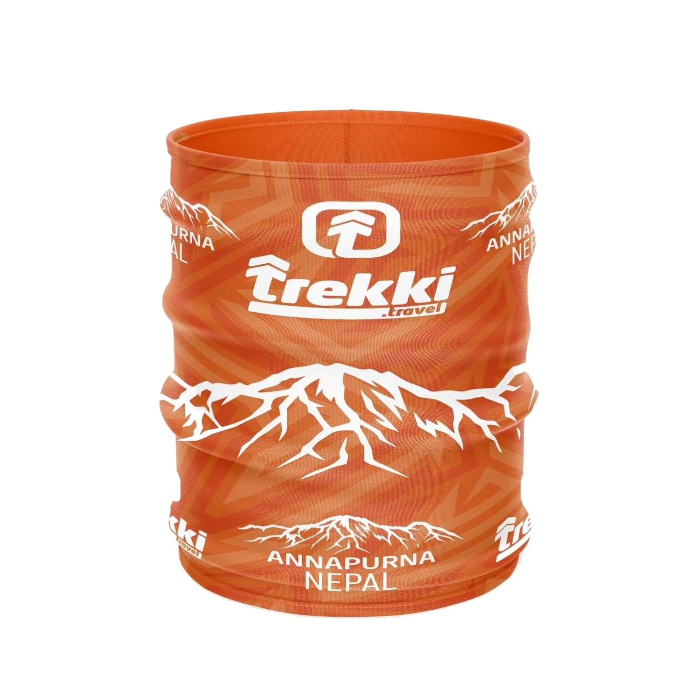
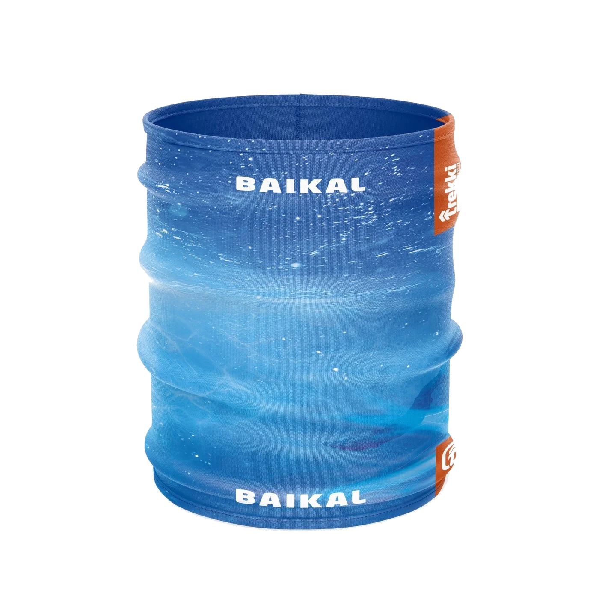
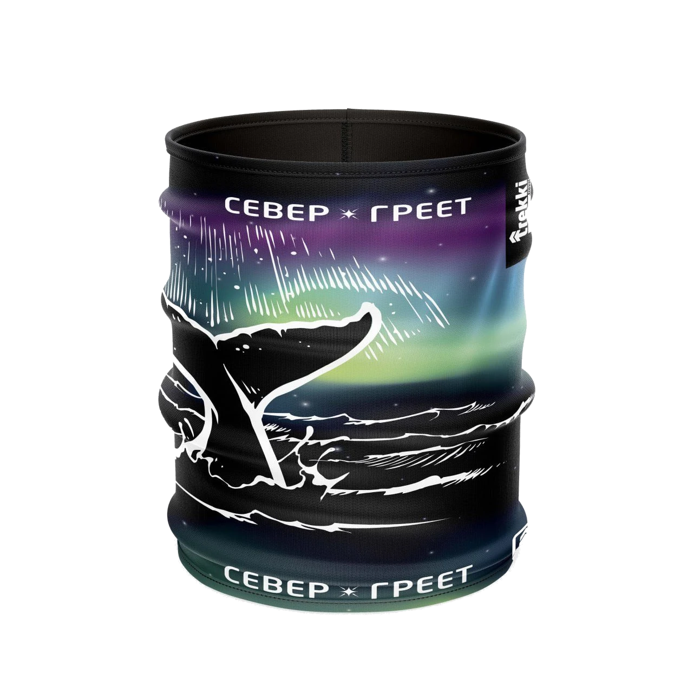

Защита в дороге
Шея, лицо, голова, ветер, солнце и прохладное утро: баф постоянно оказывается под рукой.
Сшивной баф для шеи, лица и головы с аккуратной обработкой края. Защищает от ветра, солнца и холода, а ещё легко связывает футболку или лонгслив в единую историю команды.

Баф удобно брать в поход, на старт, тренировку или командный выезд. Принт можно сделать ярким, маршрутным, клубным или совсем спокойным.


Баф хорош как самостоятельный мерч и как дополнение к форме: компактный, заметный, сшивной и полезный в реальной носке.
Шея, лицо, голова, ветер, солнце и прохладное утро: баф постоянно оказывается под рукой.
Подходит для забегов, клубных тренировок и событий, где нужна заметная вещь без сложной размерной сетки.
Баф можно сделать в том же стиле, что футболку или лонгслив: маршрут, гора, цвета команды и логотип.
У бафа меньше размерных вопросов, но важно заранее понять ткань, сезон, принт и как он будет сочетаться с остальной формой.
| Вопрос | Зачем нужен | Что прислать |
|---|---|---|
| Тираж | Определяет расчёт, сроки и вариант изготовления. | Количество бафов или примерную вилку по участникам. |
| Сезон и носка | Для жары, ветра и холода могут отличаться плотность и ощущение ткани. | Опишите, где будут носить: горы, бег, старт, корпоратив или подарок участникам. |
| Дизайн | Для бафа особенно важен повторяющийся рисунок и читаемость элементов. | Логотип, цвета, название маршрута, референсы или идею принта. |
| В одном стиле | Если баф идёт вместе с футболкой или лонгсливом, лучше сразу связать дизайн. | Напишите, нужен ли баф отдельно или как часть формы команды. |
| Формат | У бафа меньше размерных вопросов, но взрослый, детский и комплектный формат лучше выбрать заранее. | Можно свериться с форматами бафов и написать, какой вариант нужен. |